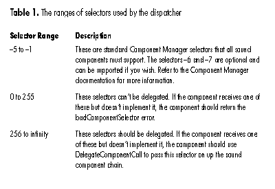
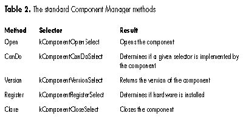
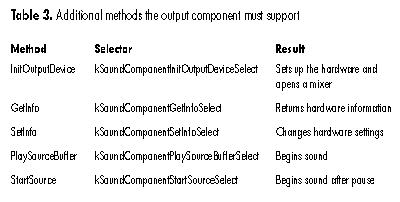
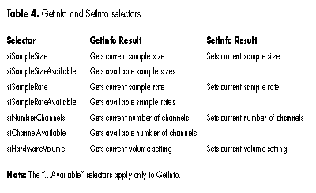
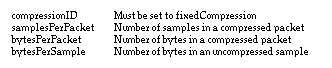
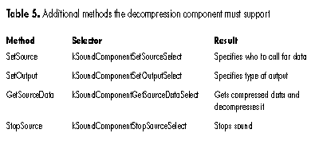

Sound Manager 3.0, Apple's current audio software release, has an extensible
architecture based on sound components that makes it easy for developers to add
support for third-party audio hardware and any compressed audio format. Inside
Macintosh: Sound gives the theory of how to do this; this article illustrates how to
implement the theory, with examples of a sound output component and a sound
decompression component.
Since its release as a system extension in June 1993, Sound Manager 3.0 has offered
developers the possibility of obtaining high-quality digital audio output from the
Macintosh using third-party audio hardware and any compressed audio format. Sound
Manager 3.0 is now built into all shipping Macintosh computers and is fully integrated
into System 7.5. QuickTime 2.0 also takes advantage of new Sound Manager features to
provide an even higher level of audio support for multimedia applications.
"Somewhere in QuickTime: What's New With Sound Manager 3.0" in develop Issue 16
gives a brief sketch of Sound Manager 3.0 and the new vistas it open.
The Sound Manager architecture and the sound component programming interface are
described in detail in Inside Macintosh: Sound. What you won't find there is an
illustration of how Sound Manager features are implemented in practice. This article
fills that gap by offering two examples of sound components. On this issue's CD you'll
find NoiseMaker, a sound output component, and MewLaw, a sound decompression
component. After briefly describing how Sound Manager 3.0 works, I'll explain how to
make a sound output component and a sound decompression component, with reference
to these examples.
Sound Manager 3.0 uses an architecture based on sound components to process audio
samples for playback. A sound component is a software module that performs a specific
task, usually some kind of audio processing like decompression, rate conversion,
sample format conversion, or mixing. Sound components use the Component Manager
for registration, loading, and execution.
Figure 1 diagrams a typical sound playback scenario and the sound components that are
used. Basically, the sequence is as follows: When an application wants to produce a
sound, it calls the Sound Manager to open a sound channel and play the sound. In
response the Sound Manager creates a chain of sound components for this channel,
where each component performs a specific operation on the audio data. The Sound
Manager passes the audio data to the first component in the chain, which can be a
decompression component if the data is compressed, a format conversion component if
the sample size needs to be changed, or a rate conversion component if the sample rate
needs to be adjusted. These components can be applied in series to completely process
the audio data into the required format. The mixer component then sums all these audio
streams together and provides a single audio source for the sound output component,
which uses hardware to convert it to an audible sound.
The sound output component (sometimes called the sound output device component or
the output device component) is a software module that identifies, controls, and plays
audio samples on some audio hardware device. This device can be a plug-in audio board,
a telecommunications pod, or just about anything else that can play sound. Apple
provides a sound output component for the built-in audio hardware on every Macintosh
except the Macintosh Plus, SE, and Classic machines.
All the sound output components installed on a Macintosh have icons displayed in the
Sound control panel that ships with Sound Manager 3.0. The user selects which sound
output component to play sounds with by clicking an icon. Figure 2 shows a situation
where two sound output components are available: the standard built-in Macintosh
sound output component and our example sound output component, NoiseMaker.
When the Sound Manager wants to play a sound, it opens the selected sound output
component and sends it commands to start playing the sound. The component is closed
when sound playback is completed. The sound output component is responsible for
opening a mixer component, which handles the complicated work of allocating chains of
sound components and processing the audio data. Our example sound output component,
NoiseMaker, shows how this works.
Apple provides sound components for mixing, rate conversion, sample format
conversion, and decompression. In addition, sound components can be defined to expand
compressed audio from any other format into a format that can be used by other
components and played by the hardware. Our example decompression component,
MewLaw, illustrates this.
Now I'll explain how to make your own sound output component, using NoiseMaker as
an example. NoiseMaker doesn't actually control an audio hardware device but rather
plays sounds using normal Sound Manager routines. It can be installed on any
Macintosh running Sound Manager 3.0 and is meant to be used as a template to manage
your own audio hardware.
Here's how NoiseMaker works: The NoiseMaker component is loaded at system startup
if the Register method called at that time indicates that the corresponding hardware is
available. When the Sound Manager plays a sound using NoiseMaker, it first calls the
Open method to open the component, followed by a call to the InitOutputDevice method
to have NoiseMaker do any hardware initializations and open a mixer component. It
then calls the PlaySourceBuffer method to start the sound playing. When the sound has
finished playing, the Sound Manager calls the Close method to have NoiseMaker release
the audio hardware and dispose of any memory it created.
I'll refer to NoiseMaker as I describe how to register a sound output component, the
structure of a sound output component, the dispatcher, and the methods and interrupt
routine that must be implemented.
In order for a sound component to be recognized by the Sound Manager, it must be
registered with the Component Manager. This is most easily done by creating a file of
type 'thng' containing a 'thng' resource that describes your sound component. When you
place this file in the Extensions folder, the Component Manager will automatically load
the sound component every time the Macintosh starts up. Listing 1 is a 'thng' resource
describing our example sound output component.
Listing 1. The 'thng' resource for NoiseMaker
#define cmpWantsRegisterMessage (1 << 31)
#define componentDoAutoVersion (1 << 0)
#define kNoiseMakerVersion 0x00010000
#define kNoiseMakerComponentID 128
resource 'thng' (kNoiseMakerComponentID, purgeable) {
'sdev', // sound output component type
'NOIS', // subtype of this component
'appl', // manufacturer
cmpWantsRegisterMessage, 0, // component flags
'proc', kNoiseMakerComponentID, // code resource
'STR ', kNoiseMakerComponentID, // component name
'STR ', kNoiseMakerComponentID+1, // component description
'ICON', kNoiseMakerComponentID, // component icon
kNoiseMakerVersion, // component version
componentDoAutoVersion, // registration flags
0, 0 // icon family ID, platform
};
For full details on the 'thng' resource, see the Component Manager
documentation in Inside Macintosh: More Macintosh Toolbox.*
The component type and subtype in the 'thng' resource identify the component so that
the Sound Manager can find it. The subtype must be unique for each hardware device
connected and must contain at least one uppercase character (Apple has dibs on
all-lowercase types); it's usually advisable to use an application creator type that has
been registered with Apple's Developer Support Center to avoid conflicts with other
companies. Similarly, the manufacturer name should identify your company and must
contain at least one uppercase character; in our example, Apple is the manufacturer so
we can get away with using all lowercase letters.
Setting the cmpWantsRegisterMessage bit in the component flags causes the Component
Manager to call the sound component with the Register method during the startup
process so that the component can determine whether its hardware is available (more
on this later). The code resource is the resource type and ID of the code that
implements your component. The component description is a string that describes the
function of the component to the user. The component name and component icon are
used in the Sound control panel, as shown in Figure 2.
The component version and the registration flags are used by the Component Manager
during loading to determine whether this component should replace an existing one. If
the componentDoAutoVersion bit is set in the registration flags, the Component
Manager will install this component only if the version given here is greater than for
any other existing component.
The icon family ID and platform fields aren't used by our component.
Sound output components use the standard format required by the Component Manager.
The main entry point is a dispatcher, which uses a selector to call the appropriate
subroutines (methods). The standard Component Manager methods must be supported,
along with a number of additional methods defined for sound output components. The
sound output component also contains an interrupt routine that functions as its
heartbeat.
Sound output components can create globals that are passed to each method. In addition,
there can be one set of global variables that the Component Manager maintains even
when the sound output component is closed, which is useful for storing state
information. (More about this later when I describe the InitOutputDevice method.)
The first routine in the component is the dispatcher, which uses a given selector to
call the appropriate method. Selectors used by the dispatcher have three ranges,
described in Table 1.

A number of methods are defined for sound components that don't need to be
implemented by every type of sound component. For example, the method
SoundComponentAddSource is used only by mixer components and shouldn't be
implemented by sound output components. When a component receives a selector that it
doesn't support but that can be delegated, it should delegate that selector to its source
component and let that component take care of it.
Listing 2 is the dispatcher from our example sound output component. This dispatcher
calls an internal utility routine called GetComponentRoutine that returns the address
of the routine to call based on the selector. If the sound output component doesn't
implement a method, it returns kDelegateComponentCall (-1) as the routine address,
which is a flag that this method should be delegated. If the routine returns nil, this is a
nondelegatable selector not supported by this component, and an error should be
returned. Otherwise, this is a valid method address and the method should be called.
Listing 2. The dispatcher from NoiseMaker
#define kDelegateComponentCall -1
pascal ComponentResult NoiseMaker(ComponentParameters *params,
GlobalsPtr globals)
{
ComponentRoutine theRtn;
ComponentResult result;
// Get address of component routine.
theRtn = GetComponentRoutine(params->what);
if (theRtn == nil)
// Selector isn't implemented.
result = badComponentSelector;
else if (theRtn == kDelegateComponentCall)
// Selector should be delegated.
result = DelegateComponentCall(params,
globals->sourceComponent);
else
// Call appropriate method.
result = CallComponentFunctionWithStorage((Handle) globals,
params, (ComponentFunctionUPP) theRtn);
return (result);
}
The Component Manager requires that every sound component implement five standard
methods, as listed in Table 2. I'll describe each of these methods here; look at the
NoiseMaker code to see them in practice.

The Open method is the first method called when a component is opened. This method
must create the component globals and store them with the Component Manager, which
will then pass these globals to all subsequent methods. While this sounds fairly simple
to implement, there are a number of nuances that frequently escape the attention of
component writers and wreak havoc; read "Pitfalls of the Open Method" and be
forewarned!
______________________________
PITFALLS OF THE OPEN METHOD
Implementing the Open method can be straightforward if you watch out for
some common pitfalls. Most important, do not access or even look for your
hardware in the Open method! There is a separate method (InitOutputDevice)
for initializing hardware. The Open method should only allocate instance
globals and return. There are two reasons for this:
Another tricky interaction with the Component Manager comes into play when
you're trying to decide where to create the component globals. Because the
sound output component is shared by all applications that are playing sound,
the Component Manager will attempt to load the component in the system heap.
In this case, your component should create its globals in the system heap as
well, so you aren't dependent on any application heaps.
However, if the Component Manager can't find enough space in the system heap
to load the component, it will load it in the application heap. In this case,
you'll want to create your globals in the application heap as well.
The Component Manager gives you a way to determine where you should create
your globals. The call GetComponentInstanceA5 returns the A5 world for the
component. If it returns 0, the component was loaded in the system heap and
the globals should go there as well; otherwise, the component is in the
application heap and the globals should also be created there. The NoiseMaker
code shows how this works. The Close method is called to release all memory
allocated and all hardware set up by the component. If the Open method fails
for some reason and returns an error, the Component Manager calls the Close
method. This means the Close method must always check to see if there are
valid globals before using or disposing of them. The Close method also must not
access the hardware unless the InitOutputDevice method has been called, for
the same reasons described in "Pitfalls of the Open Method."
______________________________
The CanDo method is used to determine whether a selector is implemented by this
component. In our example code, the CanDo method calls the internal utility routine
GetComponentRoutine to determine whether a selector is implemented.
The Version method returns the version of the component, specified as a fixed-point
number. If you're using the auto-version feature of the 'thng' resource, this version
must agree with the one specified there.
If the cmpWantsRegisterMessage bit is set in the component flags of the 'thng'
resource, the Register method is called by the Component Manager at startup time so
that you can see if your hardware is installed and determine whether your component
should be loaded. Typically, the Register method should just try to find your hardware.
If it's successful, it should return 0; if not, it should return 1, in which case the
component won't be registered and won't show up in the Sound control panel. Note that
the Open method is always called before the Register method.
In addition to the standard Component Manager methods just described, the sound
output component must support the methods listed in Table 3. Again, I'll describe these
methods here and leave it up to you to take a look at how they're implemented in the
NoiseMaker code.

The InitOutputDevice method is called by the Sound Manager after it opens the
component to set up the hardware. This method should initialize the output hardware to
a known state and then set the hardware to the default settings stored in the
component's permanent globals. "Managing Sound Component Preferences" describes
an easy way to manage permanent globals.
MANAGING SOUND COMPONENT PREFERENCES
Sound Manager 3.0 provides an easy way to save and recall preferences for your sound
component. It maintains a file called Sound Preferences in the Preferences folder and
provides two routines to manage this file: SetSoundPreference and
GetSoundPreference.
pascal OSErr SetSoundPreference(OSType type, Str255 name, Handle settings);
The SetSoundPreference routine saves a handle of data in the Sound Preferences file
tagged with the OSType
and name you provide. Typically, the name and type will be the same as your sound
component's.
pascal OSErr GetSoundPreference(OSType type, Str255 name, Handle settings);
The GetSoundPreference routine retrieves a handle from the Sound Preferences file
based on the OSType and name provided. Typically, the name and type will be the same
as your sound component's, and you'll store the handle in the refCon of your
component, as shown below.
OSErr GetPreferences(ComponentInstance self, Handle prefsHandle)
{
Handle componentName;
ComponentDescription componentDesc;
OSErr err;
componentName = NewHandle(0); // Space for name
if (componentName == nil)
return (MemError());
// Get name and subtype of sound component.
err = GetComponentInfo(self, &componentDesc, componentName,
nil, nil);
if (err != noErr)
return (err);
// Get preferences for this component from file.
HLock(componentName);
err = GetSoundPreference(componentDesc.componentSubType,
*componentName, prefsHandle);
DisposeHandle(componentName);
// Keep preferences in component's refCon.
if (err == noErr)
SetComponentRefcon(self, (long) prefsHandle);
return (err);
}
The InitOutputDevice method must also open a sound mixer component that will be its
source for all further sound operations. The mixer does all the hard work of
maintaining separate chains of sound components and calling back to the Sound Manager
to get more data, while mixing down all the sounds into the single stream of audio data
required by your sound output component. Your component simply has to specify the
type of sound it needs in the SoundComponentData structure, and the mixer will take
care of the rest.
Listing 3 shows how NoiseMaker opens a mixer that will produce a 16-bit, stereo,
44.1 kHz sample stream. For 8-bit data, the format field must be kOffsetBinary,
while for 16-bit data, the format must be kTwosComplement. The sampleRate field
contains an unsigned fixed-point sampling rate in samples per second. The sampleSize
and numChannels fields specify sample size and the mono/stereo setting. The
sampleCount field specifies the size of the mixer's output buffer in samples. Every
time it's called, the mixer returns a buffer of this size that can then be copied directly
to the hardware buffers.
Listing 3. NoiseMaker's InitOutputDevice method
pascal ComponentResult __InitOutputDevice(GlobalsPtr globals,
long actions)
{
#pragma unused (actions)
ComponentResult result;
PreferencesPtr prefsPtr;
// Open the mixer and tell it the type of data it should produce.
// The description includes sample format, sample rate, sample
// size, number of channels, and the size of your optimal
// interrupt buffer. If a mixer can't be found that will produce
// this type of data, an error is returned.
// Get settings from preferences.
prefsPtr = *globals->prefsHandle;
// Set to hardware defaults.
globals->hwSettings.flags = 0;
globals->hwSettings.format = (prefsPtr->sampleSize == 8) ?
kOffsetBinary : kTwosComplement;
globals->hwSettings.sampleRate = prefsPtr->sampleRate;
globals->hwSettings.sampleSize = prefsPtr->sampleSize;
globals->hwSettings.numChannels = prefsPtr->numChannels;
globals->hwSettings.sampleCount = kInterruptBufferSamples * 2;
// Open mixer that will produce this format.
result = OpenMixerSoundComponent(&globals->hwSettings, 0,
&globals->sourceComponent);
if (result != noErr)
return (result);
// Set the hardware to these settings.
result = SetupHardware(globals);
if (result == noErr) {
// Hardware is ready to go.
globals->hwInitialized = true;
// Lock prefs so that we can use them at interrupt time.
HLock((Handle) globals->prefsHandle);
}
return (result);
}
The GetInfo method returns information about the hardware settings. The information
returned is based on a four-character selector and is different for each selector; see
Inside Macintosh: Sound for the details. The SetInfo method changes hardware settings.
All sound output components must support the GetInfo and SetInfo selectors listed in
Table 4. All other selectors must be delegated to the mixer component.

The PlaySourceBuffer method is used to begin playing a sound. This method has to first
delegate the call to the mixer to start it playing the sound and then make sure the
hardware is turned on before returning, by checking the kSourcePaused bit in the
actions parameter.
Similarly, the StartSource method is used to begin playing a sound that has previously
been paused. In this case, the mixer isn't returning any data for this sound, and the
sound output component may have turned off the hardware if no other sounds were
playing. Like PlaySourceBuffer, this method has to first delegate the call to the mixer
to start it playing the sound again and then make sure the hardware is turned on before
returning.
The interrupt routine is the heartbeat of a sound output component. It's called
whenever the audio hardware needs to play another buffer of audio data. It's entirely
defined by the component, so it doesn't have a selector or a programming interface.
Still, all interrupt routines share the same common features.
First, the interrupt routine should check to see whether any requests have been made
to change the hardware settings as a result of the SetInfo method. If so, the hardware
should be reset to the new settings. It's important to do this at interrupt time so that
the mixer can be synchronized to the new settings without a glitch in the sound.
Second, the interrupt routine must make sure the mixer has provided a load of data. It
does this by checking the state of the SoundComponentData structure last returned by
the mixer and asking the mixer for more data if needed with the GetSourceData method,
described in the next section. Remember, the mixer always returns a buffer of the
same size, so it's a simple matter to copy the data to the hardware in fixed sizes. The
only exception occurs at the end of the sound, when it might not fill up an entire mixer
buffer. In this case, you should copy only as much data as the mixer returned.
Finally, if the mixer has no more data, all sounds have completed playing and the
interrupt routine can turn off the hardware.
Sound components can also be defined to expand compressed audio into a form that can
be used by other components and played by the available hardware. The Sound Manager
tells a decompression component what format it should use for the data it produces so
that when a sound is played it will decompress to the correct sample size, sample
format, and number of channels. Our example sound decompression component,
MewLaw, decompresses audio data encoded in u-law format.
When your sound decompression component is installed, the Sound Manager will be
able to automatically play sounds compressed in your format, so most applications will
be able to play your compressed sounds without any modification. To determine which
decompressor to call, the Sound Manager matches the compression format types stored
in AIFF files and 'snd ' resources (described in detail in Inside Macintosh: Sound)
against the subtype you specify in the 'thng' resource.
The structure of a decompression component is similar to that of a sound output
component, with a few exceptions and some additional methods, described in the
following sections.
Because there is no hardware associated with a decompression component, no
initialization is needed beyond the Open call, and only one selector has to be
implemented for the GetInfo method. The 'thng' resource should have 'sdec' for a type
and your compression OSType for a subtype. The component flags must also be set to
describe your format, as documented in Inside Macintosh: Sound. The flags should
specify the data formats supported by your component in terms of the sample sizes,
sample formats, and number of channels that your component can handle.
In the case of a sound decompression component, the GetInfo method returns
information about your compression algorithm. Your component needs to support only
the siCompressionFactor selector. The infoPtr parameter passed in will point to a
CompressionInfo data structure, which must be filled out with information describing
your compression algorithm. On entry, the format field of the CompressionInfo record
will contain the OSType of the compression format. The fields that you must fill out are
as follows:

Just like in the output component, the PlaySourceBuffer method is called when the
Sound Manager needs to play a new sound. In the case of a sound decompression
component, though, your routine should clear out any pointers to the source data that
you're keeping. It should not reset your compression state variables, as this new
buffer is probably a continuation of a previous sound. Be sure to delegate this call to
your source component (the component immediately preceding yours in the chain)
before you return.
Besides the methods supported by the sound output component, the sound
decompression component must support the methods listed in Table 5. MewLaw
demonstrates the use of these methods.

The SetSource method is used by the Sound Manager to tell your component who to call
to get more data. The source field should be stored for later use; then the SetOutput
method should be called on this source to tell it the type of input needed by the
decompressor.
The SetOutput method is used by the Sound Manager to tell your component what kind of
output to produce. A SoundComponentData record is passed in specifying the output the
Sound Manager is requesting. If your component can't produce data using this format,
it should set the actual field to the kind of output it can produce and return paramErr.
The Sound Manager will then try to convert your output to the format it needs.
The GetSourceData method does the work of getting compressed data from the source,
decompressing the data into an internal buffer, and returning this buffer to the
component that called it. A couple of subtle features must be supported:
If neither of these is the case, there is valid compressed source data that your routine
should decompress. First you have to decide whether the sound is playing in reverse
(that is, backward). Many applications (such as QuickTime applications) need to play
sounds backward. The Sound Manager supports this by setting a bit in the flags field of
the SoundComponentData record telling the components to play the sound backward.
Decompression can't go backward, but the decompression component can decompress
chunks of the sound starting at the end of the source buffer and working toward the
beginning. (Because the internal buffer is typically fairly small, decompression
components often need to decompress source data in chunks.) It passes these
decompressed chunks to the format conversion component, which takes care of actually
reversing the samples. The example code on the CD shows how this is done.
Once you've determined the right source data to decompress, you simply call your
decompression routine, update the information in your SoundComponentData record,
and return a pointer to this record.
The StopSource method is called when the Sound Manager needs to stop a sound from
playing. Your routine should clear out any pointers to the source data and reset all
compression state information. Be sure to delegate this call to your source component
before you return.
With Sound Manager 3.0 so widely available, you'll want to take advantage of the
support it offers for third-party audio hardware and for the full range of compressed
audio formats by making your own sound components. Look to Inside Macintosh: Sound
for the technical details of how to proceed, and examine the code for NoiseMaker and
MewLaw to see examples of how it's done. Then start making some noises of your own!
______________________________
REFERENCES
______________________________
KIP OLSON received a watch for Christmas last year that records vertical feet skied.
To test it out, he had to abandon his post working on QuickTime at Apple while he went
on a two-month ski odyssey with his shredder-pal KON. When they weren't arguing
about unfair scoring on the Puzzle Page, they managed to rack up 537,460 vertical
feet in 340 runs over 28 days, a feat akin to skiing down Mt. Everest 18 times.
Thanks to our technical reviewers Bob Aron, Ray Chiang, and Jim Reekes.